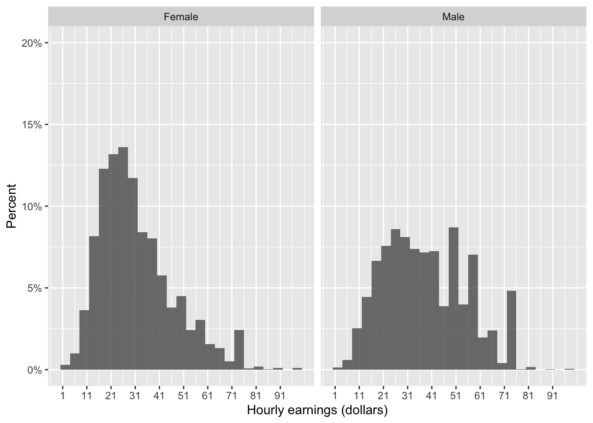
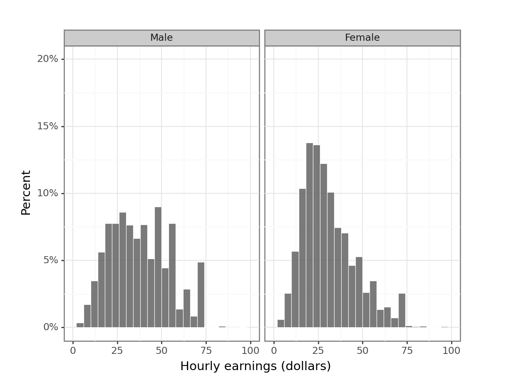
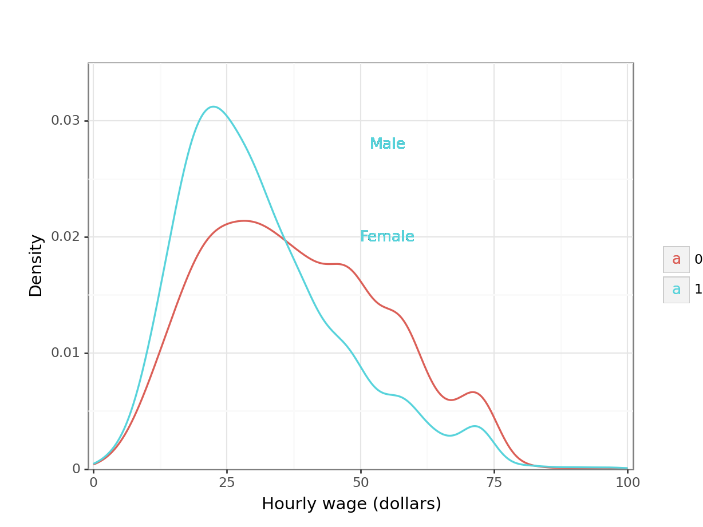

Aplicación 2.5 (Modelo de regresión lineal con variables cualitativas): Brecha salarial entre hombres y mujeres en Estados Unidos
Desde un punto de vista económico, el objetivo de esta aplicación es cuantificar el alcance de la discriminación salarial de las mujeres en el mercado laboral americano. Así, en primer lugar compararemos los salarios de hombres y mujeres que comparten similitudes en los dos factores más relevantes para la determinación del salario, que son la edad o el nivel de educación, y luego extenderemos la especificación básica con diferentes variables de control para tener una aproximación más realista del concepto ceteris paribus (para poder aproximarse a la verdadera relación causal hay que tratar de condicionar sobre “todas” las variables relevantes para la determinación del salario).
Como especificación econométrica base se usará el siguiente modelo log-lineal, que se corresponde con la ecuación de salarios de Mincer:
\[ log(w_{i}) = \beta_1 + \beta_2 age_{i} + \beta_3 educ_{i} + e_{i} \]
Desde un punto de vista metodológico, en este ejemplo se introduce el concepto de variables ficticia y su uso en econometría, mostrando su potencial para modelizar situaciones donde alguno de los regresores es de tipo cualitativo. Asimismo, se mostrará cómo debe cambiarse la especificación base en función de las características específicas de los datos con los que se trabaje.
Código R
# Lectura de librerías
library(tidyverse)
library(huxtable)
#
# INFORMACIÓN SOBRE EL CONJUNTO ORIGINAL DE DATOS Y SOBRE
# LA OBTENCIÓN DE LA SUBMUESTRA USADA EN LA APLICACIÓN
#
# USA 2014 CENSUS DATA: MORG14_USA.csv
# - Cross-sectional data: year 2014
# - Observations are individuals of age 15 to 85
# (representative sample of this sub-pop.)
# - ID variables:
# HHID: houeshold id
# HRHHID2: 2nd part of houeshold id (some original hhid-s are split)
# LINENO: person ("line") number in household
# AGE: age
# SEX: gender
# EARNWKE: weakly earnings
# UHOURSE: usual work hours
# OCC2012: occupational code (census 2010 classification)
# GRADE92: highest educational grade completed
# - Labels of the variables are downlodable from here:
# <http://data.nber.org/morg/docs/cpsx.pdf>
# - Occupational classification (census 2010) codes:
# <https://www.bls.gov/cps/cenocc2010.htm>
#
# FILTRADO PREVIO DE OBSERVACIONES:
#
# Edad entre 24 to 64 años;
# Haber trabajado más de 20 horas semanales;
# Ingresos semanales positivos;
# Empleados con estudios universitarios (grade92>44)
#
# Operación sobre el fichero original [cps = read_csv("MORG14_USA.csv")]:
# cps <- cps %>%
# filter(age>=24 & age<=64 & uhours>=20 & earnwke>0 & grade92>=44)
#
# Lectura de datos
cps <- read_csv("data/CPS2014_USA.csv")
# Transformación de variables
cps <- cps %>% mutate(female=sex==2, w=earnwke/uhours) %>% filter(w>=1)
# Distribución de los salarios
cps %>% dplyr::select(earnwke,uhours,w) %>% summary() earnwke uhours w
Min. : 38 Min. :20.00 Min. : 1.026
1st Qu.: 923 1st Qu.:40.00 1st Qu.: 21.634
Median :1346 Median :40.00 Median : 31.250
Mean :1483 Mean :42.97 Mean : 34.565
3rd Qu.:1923 3rd Qu.:47.00 3rd Qu.: 45.673
Max. :2885 Max. :99.00 Max. :144.231 # Histograma diferenciado por género
earnings_hist<- ggplot(data = cps,
aes (x = w, y = 2*(..count..)/sum(..count..))) +
geom_histogram(binwidth = 4, size = 0.25, alpha = 0.8,
boundary=0, closed='left', show.legend=F, na.rm =TRUE) +
labs(x = "Hourly earnings (dollars)", y = "Percent") +
facet_wrap(~ifelse(female, "Female", "Male"))+
labs(x = "Hourly earnings (dollars)",y = "Percent")+
scale_x_continuous(limits = c(0,100) , breaks = seq(1, 100, by = 10),) +
scale_y_continuous(limits=c(0, 0.20), breaks = seq(0, 0.20, by = 0.05),
labels = scales::percent_format(accuracy = 5L))
earnings_hist
# Densidad estimada diferenciada por género
ggplot(data = cps) + geom_density(aes(x = w, fill = female), alpha=0.3)
# SALARIOS, EDAD Y GÉNERO
reg0 <- lm(log(w) ~ female, data=cps)
reg1 <- lm(log(w) ~ female + age, data=cps)
reg2 <- lm(log(w) ~ female*age, data=cps) # Interacción entre género y edad
reg21 <- lm(log(w) ~ age, data=cps %>% filter(female==1)) # Ec. mujeres
reg22 <- lm(log(w) ~ age, data=cps %>% filter(female==0)) # Ec. hombres
huxreg(reg0, reg1, reg2, reg21, reg22,
statistics = c(N = "nobs", R2 = "r.squared"))| (1) | (2) | (3) | (4) | (5) | |
| (Intercept) | 3.522 *** | 3.196 *** | 3.117 *** | 3.081 *** | 3.117 *** |
| (0.006) | (0.017) | (0.023) | (0.021) | (0.023) | |
| femaleTRUE | -0.193 *** | -0.182 *** | -0.036 | ||
| (0.008) | (0.008) | (0.032) | |||
| age | 0.007 *** | 0.009 *** | 0.006 *** | 0.009 *** | |
| (0.000) | (0.001) | (0.000) | (0.001) | ||
| femaleTRUE:age | -0.003 *** | ||||
| (0.001) | |||||
| N | 18220 | 18220 | 18220 | 9672 | 8548 |
| R2 | 0.034 | 0.057 | 0.058 | 0.015 | 0.036 |
| *** p < 0.001; ** p < 0.01; * p < 0.05. | |||||
# No linealidad en la edad
cps <- cps %>% mutate(age2=age**2, age3=age**3, age4=age**4)
reg3 <- lm(log(w) ~ female + age + age2 + age3 + age4, data=cps)
huxreg(reg1, reg3, statistics = c(N = "nobs", R2 = "r.squared"))| (1) | (2) | |
| (Intercept) | 3.196 *** | -3.131 ** |
| (0.017) | (1.059) | |
| femaleTRUE | -0.182 *** | -0.180 *** |
| (0.008) | (0.007) | |
| age | 0.007 *** | 0.525 *** |
| (0.000) | (0.103) | |
| age2 | -0.016 *** | |
| (0.004) | ||
| age3 | 0.000 *** | |
| (0.000) | ||
| age4 | -0.000 ** | |
| (0.000) | ||
| N | 18220 | 18220 |
| R2 | 0.057 | 0.079 |
| *** p < 0.001; ** p < 0.01; * p < 0.05. | ||
# SALARIOS, SEXO, EDAD Y NIVEL DE EDUCACIÓN
cps <- cps %>% mutate(ed_MA=as.numeric(grade92==44),
ed_PSD = as.numeric(grade92==45),
ed_DD = as.numeric(grade92==46))
reg4 <- lm(log(w) ~ female + age + age2 + age3 + age4 + ed_PSD + ed_DD,
data=cps)
huxreg(reg3, reg4, statistics = c(N = "nobs", R2 = "r.squared"))| (1) | (2) | |
| (Intercept) | -3.131 ** | -2.789 ** |
| (1.059) | (1.052) | |
| femaleTRUE | -0.180 *** | -0.167 *** |
| (0.007) | (0.007) | |
| age | 0.525 *** | 0.491 *** |
| (0.103) | (0.102) | |
| age2 | -0.016 *** | -0.014 *** |
| (0.004) | (0.004) | |
| age3 | 0.000 *** | 0.000 *** |
| (0.000) | (0.000) | |
| age4 | -0.000 ** | -0.000 ** |
| (0.000) | (0.000) | |
| ed_PSD | 0.142 *** | |
| (0.012) | ||
| ed_DD | 0.129 *** | |
| (0.011) | ||
| N | 18220 | 18220 |
| R2 | 0.079 | 0.091 |
| *** p < 0.001; ** p < 0.01; * p < 0.05. | ||
# SALARIOS, SEXO, EDAD, EDUCACIÓN Y OTROS FACTORES (CUALITATIVOS) ADICIONALES
# Construcción de factores condicionantes
# Factores demográficos (predeterminados)
cps <- cps %>% mutate(white=as.numeric(race==1),
afram = as.numeric(race==2),
asian = as.numeric(race==4),
hisp = !is.na(ethnic),
othernonw = as.numeric(white==0 & afram==0
& asian==0 & hisp==0),
nonUSborn = as.numeric(
prcitshp=="Foreign Born, US Cit By Naturalization" |
prcitshp=="Foreign Born, Not a US Citizen")
)
# Factores demográficos (potencialmente endógenos)
cps <- cps %>% mutate(married = as.numeric(marital==1 | marital==2),
divorced = as.numeric(marital==3 | marital==5 |
marital==6),
wirowed = as.numeric(marital==4),
nevermar = as.numeric(marital==7),
child0 = as.numeric(chldpres==0),
child1 = as.numeric(chldpres==1),
child2 = as.numeric(chldpres==2),
child3 = as.numeric(chldpres==3),
child4pl = as.numeric(chldpres>=4))
# Factores laborales
cps <- cps %>% mutate(fedgov = as.numeric(class=="Government - Federal"),
stagov = as.numeric(class=="Government - State"),
locgov = as.numeric(class=="Government - Local"),
nonprof = as.numeric(class=="Private, Nonprofit"),
ind2dig = as.integer(as.numeric(as.factor(ind02))/100),
occ2dig = as.integer(occ2012/100),
union = as.numeric(unionmme=="Yes" | unioncov=="Yes"))
# Regresión con factores
reg5 <- lm(log(w) ~ female
+ age + age2 + age3 + age4
+ ed_PSD + ed_DD
+ afram + hisp + asian + othernonw + nonUSborn
+ married + divorced + wirowed + child1 + child2 + child3 +child4pl
+ uhours + fedgov + stagov + locgov + nonprof + union
+ as.factor(stfips) + as.factor(ind2dig) + as.factor(occ2dig),
data=cps)
summary(reg5)
Call:
lm(formula = log(w) ~ female + age + age2 + age3 + age4 + ed_PSD +
ed_DD + afram + hisp + asian + othernonw + nonUSborn + married +
divorced + wirowed + child1 + child2 + child3 + child4pl +
uhours + fedgov + stagov + locgov + nonprof + union + as.factor(stfips) +
as.factor(ind2dig) + as.factor(occ2dig), data = cps)
Residuals:
Min 1Q Median 3Q Max
-3.6504 -0.2513 0.0367 0.2953 1.5951
Coefficients:
Estimate Std. Error t value Pr(>|t|)
(Intercept) 1.540e-01 9.778e-01 0.157 0.874859
femaleTRUE -1.117e-01 7.428e-03 -15.034 < 2e-16 ***
age 2.666e-01 9.527e-02 2.798 0.005141 **
age2 -7.109e-03 3.390e-03 -2.097 0.036017 *
age3 8.662e-05 5.222e-05 1.659 0.097183 .
age4 -4.078e-07 2.942e-07 -1.386 0.165817
ed_PSD 7.534e-02 1.333e-02 5.653 1.60e-08 ***
ed_DD 1.139e-01 1.166e-02 9.764 < 2e-16 ***
afram -8.387e-02 1.337e-02 -6.272 3.65e-10 ***
hispTRUE -2.341e-02 1.546e-02 -1.514 0.129996
asian 2.119e-02 1.411e-02 1.502 0.133025
othernonw 2.047e-02 2.613e-02 0.783 0.433408
nonUSborn -5.023e-02 1.161e-02 -4.328 1.51e-05 ***
married 6.139e-02 1.049e-02 5.852 4.95e-09 ***
divorced 5.025e-02 1.359e-02 3.697 0.000219 ***
wirowed 6.760e-02 3.606e-02 1.875 0.060876 .
child1 5.796e-02 1.665e-02 3.480 0.000502 ***
child2 1.093e-02 2.036e-02 0.537 0.591310
child3 2.589e-02 1.243e-02 2.083 0.037250 *
child4pl 2.769e-02 9.711e-03 2.851 0.004359 **
uhours -4.568e-03 3.873e-04 -11.795 < 2e-16 ***
fedgov 8.580e-02 1.535e-02 5.588 2.33e-08 ***
stagov -4.648e-02 1.272e-02 -3.654 0.000259 ***
locgov -3.900e-02 1.312e-02 -2.974 0.002946 **
nonprof -7.461e-02 1.075e-02 -6.939 4.08e-12 ***
union 6.531e-02 1.067e-02 6.122 9.41e-10 ***
as.factor(stfips)AL -2.471e-01 4.712e-02 -5.245 1.58e-07 ***
as.factor(stfips)AR -2.096e-01 5.323e-02 -3.939 8.22e-05 ***
as.factor(stfips)AZ -1.321e-01 4.641e-02 -2.846 0.004436 **
as.factor(stfips)CA 3.500e-02 3.499e-02 1.000 0.317191
as.factor(stfips)CO -9.456e-02 3.903e-02 -2.423 0.015409 *
as.factor(stfips)CT 2.059e-02 3.853e-02 0.534 0.593052
as.factor(stfips)DC 1.263e-01 3.664e-02 3.447 0.000569 ***
as.factor(stfips)DE -8.644e-02 4.360e-02 -1.983 0.047434 *
as.factor(stfips)FL -1.453e-01 3.806e-02 -3.817 0.000136 ***
as.factor(stfips)GA -1.081e-01 4.055e-02 -2.667 0.007665 **
as.factor(stfips)HI -1.569e-01 4.494e-02 -3.492 0.000481 ***
as.factor(stfips)IA -1.883e-01 4.391e-02 -4.288 1.81e-05 ***
as.factor(stfips)ID -1.807e-01 4.934e-02 -3.662 0.000251 ***
as.factor(stfips)IL -8.466e-02 3.758e-02 -2.253 0.024275 *
as.factor(stfips)IN -1.404e-01 4.594e-02 -3.057 0.002241 **
as.factor(stfips)KS -1.695e-01 4.228e-02 -4.010 6.10e-05 ***
as.factor(stfips)KY -2.156e-01 4.476e-02 -4.817 1.47e-06 ***
as.factor(stfips)LA -1.571e-01 4.781e-02 -3.285 0.001022 **
as.factor(stfips)MA -5.402e-03 3.909e-02 -0.138 0.890090
as.factor(stfips)MD -3.931e-02 3.767e-02 -1.044 0.296715
as.factor(stfips)ME -1.688e-01 4.346e-02 -3.885 0.000103 ***
as.factor(stfips)MI -6.645e-02 4.041e-02 -1.644 0.100111
as.factor(stfips)MN -5.169e-02 3.949e-02 -1.309 0.190542
as.factor(stfips)MO -1.155e-01 4.354e-02 -2.653 0.007979 **
as.factor(stfips)MS -1.933e-01 4.925e-02 -3.925 8.69e-05 ***
as.factor(stfips)MT -2.543e-01 4.967e-02 -5.121 3.07e-07 ***
as.factor(stfips)NC -1.602e-01 4.171e-02 -3.841 0.000123 ***
as.factor(stfips)ND -1.706e-01 4.657e-02 -3.663 0.000250 ***
as.factor(stfips)NE -2.020e-01 4.338e-02 -4.656 3.25e-06 ***
as.factor(stfips)NH -9.275e-02 4.036e-02 -2.298 0.021581 *
as.factor(stfips)NJ 4.035e-02 3.941e-02 1.024 0.305976
as.factor(stfips)NM -1.522e-01 4.872e-02 -3.124 0.001784 **
as.factor(stfips)NV -1.545e-01 4.747e-02 -3.255 0.001134 **
as.factor(stfips)NY 3.355e-02 3.604e-02 0.931 0.351794
as.factor(stfips)OH -1.475e-01 3.994e-02 -3.694 0.000222 ***
as.factor(stfips)OK -1.969e-01 4.855e-02 -4.056 5.01e-05 ***
as.factor(stfips)OR -8.150e-02 4.307e-02 -1.892 0.058466 .
as.factor(stfips)PA -7.683e-02 3.851e-02 -1.995 0.046071 *
as.factor(stfips)RI -2.267e-02 4.185e-02 -0.542 0.588023
as.factor(stfips)SC -2.086e-01 4.653e-02 -4.483 7.42e-06 ***
as.factor(stfips)SD -2.505e-01 4.683e-02 -5.350 8.90e-08 ***
as.factor(stfips)TN -1.922e-01 4.772e-02 -4.027 5.67e-05 ***
as.factor(stfips)TX -9.406e-02 3.691e-02 -2.548 0.010843 *
as.factor(stfips)UT -1.021e-01 4.637e-02 -2.202 0.027679 *
as.factor(stfips)VA -1.775e-02 3.870e-02 -0.459 0.646472
as.factor(stfips)VT -1.210e-01 4.196e-02 -2.884 0.003932 **
as.factor(stfips)WA -2.774e-02 4.105e-02 -0.676 0.499183
as.factor(stfips)WI -9.754e-02 4.191e-02 -2.328 0.019943 *
as.factor(stfips)WV -1.948e-01 4.651e-02 -4.187 2.84e-05 ***
as.factor(stfips)WY -1.534e-01 4.793e-02 -3.201 0.001373 **
as.factor(ind2dig)1 2.052e-02 9.260e-03 2.216 0.026685 *
as.factor(ind2dig)2 -8.211e-03 1.352e-02 -0.607 0.543716
as.factor(occ2dig)1 -4.142e-02 2.327e-02 -1.780 0.075074 .
as.factor(occ2dig)2 -1.594e-01 2.500e-02 -6.376 1.86e-10 ***
as.factor(occ2dig)3 -9.494e-02 3.087e-02 -3.076 0.002103 **
as.factor(occ2dig)4 -9.839e-02 2.194e-02 -4.485 7.35e-06 ***
as.factor(occ2dig)5 -2.686e-01 4.071e-02 -6.597 4.30e-11 ***
as.factor(occ2dig)6 -2.539e-01 4.095e-02 -6.201 5.72e-10 ***
as.factor(occ2dig)7 -7.895e-02 2.750e-02 -2.871 0.004095 **
as.factor(occ2dig)8 -1.457e-01 2.534e-02 -5.748 9.17e-09 ***
as.factor(occ2dig)9 -1.297e-01 5.286e-02 -2.454 0.014144 *
as.factor(occ2dig)10 -7.087e-02 2.317e-02 -3.058 0.002230 **
as.factor(occ2dig)11 -7.689e-02 3.927e-02 -1.958 0.050245 .
as.factor(occ2dig)12 -1.407e-01 4.141e-02 -3.398 0.000679 ***
as.factor(occ2dig)13 -1.240e-01 3.173e-02 -3.908 9.36e-05 ***
as.factor(occ2dig)14 -6.905e-04 3.200e-02 -0.022 0.982787
as.factor(occ2dig)15 -6.228e-02 3.901e-02 -1.597 0.110381
as.factor(occ2dig)16 -2.731e-01 3.417e-02 -7.993 1.39e-15 ***
as.factor(occ2dig)17 -1.805e-01 3.260e-02 -5.536 3.14e-08 ***
as.factor(occ2dig)18 -2.434e-01 3.260e-02 -7.468 8.53e-14 ***
as.factor(occ2dig)19 -3.420e-01 8.258e-02 -4.142 3.46e-05 ***
as.factor(occ2dig)20 -4.054e-01 2.198e-02 -18.442 < 2e-16 ***
as.factor(occ2dig)21 -1.400e-01 2.341e-02 -5.980 2.27e-09 ***
as.factor(occ2dig)22 -3.356e-01 2.314e-02 -14.499 < 2e-16 ***
as.factor(occ2dig)23 -3.713e-01 2.025e-02 -18.333 < 2e-16 ***
as.factor(occ2dig)24 -4.447e-01 3.779e-02 -11.765 < 2e-16 ***
as.factor(occ2dig)25 -4.854e-01 3.938e-02 -12.326 < 2e-16 ***
as.factor(occ2dig)26 -2.782e-01 6.122e-02 -4.544 5.55e-06 ***
as.factor(occ2dig)27 -4.193e-01 5.510e-02 -7.610 2.88e-14 ***
as.factor(occ2dig)28 -2.648e-01 3.883e-02 -6.820 9.40e-12 ***
as.factor(occ2dig)29 -3.460e-01 1.599e-01 -2.164 0.030511 *
as.factor(occ2dig)30 -1.165e-01 2.295e-02 -5.077 3.87e-07 ***
as.factor(occ2dig)31 -9.354e-02 3.050e-02 -3.067 0.002166 **
as.factor(occ2dig)32 -1.551e-01 2.342e-02 -6.620 3.70e-11 ***
as.factor(occ2dig)33 -3.636e-01 7.318e-02 -4.968 6.82e-07 ***
as.factor(occ2dig)34 -6.699e-01 9.335e-02 -7.176 7.44e-13 ***
as.factor(occ2dig)35 -2.709e-01 5.356e-02 -5.057 4.31e-07 ***
as.factor(occ2dig)36 -6.530e-01 5.767e-02 -11.323 < 2e-16 ***
as.factor(occ2dig)37 -2.927e-01 6.200e-02 -4.721 2.36e-06 ***
as.factor(occ2dig)38 -5.000e-01 6.009e-02 -8.321 < 2e-16 ***
as.factor(occ2dig)39 -6.071e-01 7.307e-02 -8.309 < 2e-16 ***
as.factor(occ2dig)40 -1.005e+00 6.490e-02 -15.479 < 2e-16 ***
as.factor(occ2dig)41 -1.086e+00 1.001e-01 -10.847 < 2e-16 ***
as.factor(occ2dig)42 -9.658e-01 6.934e-02 -13.928 < 2e-16 ***
as.factor(occ2dig)43 -4.194e-01 1.074e-01 -3.905 9.47e-05 ***
as.factor(occ2dig)44 -1.228e+00 1.598e-01 -7.685 1.60e-14 ***
as.factor(occ2dig)45 -9.310e-01 9.541e-02 -9.757 < 2e-16 ***
as.factor(occ2dig)46 -7.886e-01 5.903e-02 -13.359 < 2e-16 ***
as.factor(occ2dig)47 -4.754e-01 3.038e-02 -15.647 < 2e-16 ***
as.factor(occ2dig)48 -2.589e-01 3.387e-02 -7.643 2.23e-14 ***
as.factor(occ2dig)49 -4.440e-01 5.644e-02 -7.867 3.83e-15 ***
as.factor(occ2dig)50 -3.438e-01 4.802e-02 -7.160 8.39e-13 ***
as.factor(occ2dig)51 -5.860e-01 5.659e-02 -10.354 < 2e-16 ***
as.factor(occ2dig)52 -5.306e-01 4.572e-02 -11.606 < 2e-16 ***
as.factor(occ2dig)53 -6.387e-01 6.287e-02 -10.160 < 2e-16 ***
as.factor(occ2dig)54 -6.779e-01 7.299e-02 -9.287 < 2e-16 ***
as.factor(occ2dig)55 -6.143e-01 1.074e-01 -5.720 1.08e-08 ***
as.factor(occ2dig)56 -3.998e-01 7.674e-02 -5.210 1.91e-07 ***
as.factor(occ2dig)57 -6.743e-01 4.334e-02 -15.560 < 2e-16 ***
as.factor(occ2dig)58 -6.413e-01 5.626e-02 -11.400 < 2e-16 ***
as.factor(occ2dig)59 -5.035e-01 6.912e-02 -7.285 3.35e-13 ***
as.factor(occ2dig)60 -4.953e-01 1.511e-01 -3.278 0.001048 **
as.factor(occ2dig)62 -6.111e-01 8.530e-02 -7.164 8.15e-13 ***
as.factor(occ2dig)63 -4.139e-01 1.510e-01 -2.741 0.006137 **
as.factor(occ2dig)64 -5.010e-01 2.020e-01 -2.481 0.013126 *
as.factor(occ2dig)66 -2.778e-01 2.604e-01 -1.067 0.286138
as.factor(occ2dig)67 -1.139e+00 2.253e-01 -5.055 4.34e-07 ***
as.factor(occ2dig)68 4.518e-01 4.499e-01 1.004 0.315280
as.factor(occ2dig)70 -3.977e-01 8.503e-02 -4.678 2.92e-06 ***
as.factor(occ2dig)71 -3.346e-01 2.255e-01 -1.484 0.137858
as.factor(occ2dig)72 -6.765e-01 1.511e-01 -4.477 7.63e-06 ***
as.factor(occ2dig)73 -3.578e-01 1.431e-01 -2.500 0.012420 *
as.factor(occ2dig)74 -4.804e-01 2.253e-01 -2.132 0.033028 *
as.factor(occ2dig)75 -1.129e+00 4.499e-01 -2.508 0.012136 *
as.factor(occ2dig)76 -7.677e-01 4.500e-01 -1.706 0.088066 .
as.factor(occ2dig)77 -3.976e-01 7.773e-02 -5.116 3.16e-07 ***
as.factor(occ2dig)78 -7.281e-01 3.185e-01 -2.286 0.022248 *
as.factor(occ2dig)79 -1.216e+00 4.499e-01 -2.703 0.006888 **
as.factor(occ2dig)80 1.036e-01 4.499e-01 0.230 0.817887
as.factor(occ2dig)81 -6.093e-01 2.019e-01 -3.017 0.002555 **
as.factor(occ2dig)82 -6.297e-01 1.843e-01 -3.417 0.000635 ***
as.factor(occ2dig)83 -1.262e+00 2.601e-01 -4.853 1.23e-06 ***
as.factor(occ2dig)84 -7.511e-01 3.188e-01 -2.356 0.018494 *
as.factor(occ2dig)86 -2.707e-01 1.708e-01 -1.585 0.112883
as.factor(occ2dig)87 -4.341e-01 8.815e-02 -4.925 8.51e-07 ***
as.factor(occ2dig)88 -9.160e-01 1.599e-01 -5.727 1.04e-08 ***
as.factor(occ2dig)89 -4.953e-01 1.432e-01 -3.460 0.000542 ***
as.factor(occ2dig)90 -1.211e-01 8.998e-02 -1.345 0.178527
as.factor(occ2dig)91 -8.391e-01 6.843e-02 -12.263 < 2e-16 ***
as.factor(occ2dig)93 -9.595e-01 2.260e-01 -4.245 2.19e-05 ***
as.factor(occ2dig)94 -3.147e-01 1.711e-01 -1.839 0.065928 .
as.factor(occ2dig)96 -8.983e-01 1.212e-01 -7.408 1.34e-13 ***
as.factor(occ2dig)97 -1.182e+00 4.501e-01 -2.625 0.008669 **
---
Signif. codes: 0 '***' 0.001 '**' 0.01 '*' 0.05 '.' 0.1 ' ' 1
Residual standard error: 0.4488 on 18051 degrees of freedom
Multiple R-squared: 0.2641, Adjusted R-squared: 0.2572
F-statistic: 38.56 on 168 and 18051 DF, p-value: < 2.2e-16Código Python
# Lectura de librerías
import numpy as np
import pandas as pd
from plotnine import *
from scipy.stats import norm
import statsmodels.api as sm
import statsmodels.formula.api as smf
from mizani import transforms
from mizani.formatters import percent_format
from stargazer.stargazer import Stargazer
#
# FILTRADO PREVIO DE OBSERVACIONES:
#
# Operación sobre el fichero original: cps = pd.read_csv('data/MORG14_USA.csv')
# cps = cps.query("age>=24 & age<=64 & uhours>=20 & earnwke>0 & grade92>=44")
#
# Lectura de datos
cps = pd.read_csv('data/CPS2014_USA.csv')
# Operaciones con variables
cps["female"] = (cps.sex == 2).astype(int)
cps["w"] = cps["earnwke"] / cps["uhours"]
cps = cps.query("w>=1")
# Distribución de los salarios
cps.loc[:,["earnwke","uhours","w"]].describe() earnwke uhours w
count 18220.000000 18220.000000 18220.000000
mean 1483.491212 42.970088 34.565432
std 746.672256 9.135281 16.622801
min 38.000000 20.000000 1.025556
25% 923.000000 40.000000 21.634500
50% 1346.000000 40.000000 31.250000
75% 1923.070000 47.000000 45.673000
max 2884.610000 99.000000 144.230500# SALARIOS, SEXO Y EDAD
reg0 = smf.ols(formula="np.log(w) ~ female", data=cps).fit()
print(reg0.summary()) OLS Regression Results
==============================================================================
Dep. Variable: np.log(w) R-squared: 0.034
Model: OLS Adj. R-squared: 0.034
Method: Least Squares F-statistic: 645.5
Date: Wed, 15 Nov 2023 Prob (F-statistic): 5.68e-140
Time: 08:49:16 Log-Likelihood: -13647.
No. Observations: 18220 AIC: 2.730e+04
Df Residuals: 18218 BIC: 2.731e+04
Df Model: 1
Covariance Type: nonrobust
==============================================================================
coef std err t P>|t| [0.025 0.975]
------------------------------------------------------------------------------
Intercept 3.5215 0.006 636.177 0.000 3.511 3.532
female -0.1930 0.008 -25.407 0.000 -0.208 -0.178
==============================================================================
Omnibus: 1256.924 Durbin-Watson: 1.853
Prob(Omnibus): 0.000 Jarque-Bera (JB): 1732.098
Skew: -0.603 Prob(JB): 0.00
Kurtosis: 3.910 Cond. No. 2.70
==============================================================================
Notes:
[1] Standard Errors assume that the covariance matrix of the errors is correctly specified.# Histograma diferenciado por género
ggplot(cps, aes(x="w", y="2*stat(count)/sum(stat(count))")) + geom_histogram(
binwidth=4,
color="white",
size=0.25,
alpha=0.8,
show_legend=False,
na_rm=True,
) + labs(x="Hourly earnings (dollars)", y="Percent") + facet_wrap('~female',labeller={'0':"Male",'1':"Female"}
) + labs(
x="Hourly earnings (dollars)", y="Percent"
) + scale_x_continuous(
limits=(0, 100),
) + scale_y_continuous(
limits=(0, 0.20), labels=percent_format()
) + theme_bw()<ggplot: (329785179)>
# Densidad estimada diferenciada por género
ggplot(cps, aes(x="w", y="stat(density)", color="factor(female)")) + geom_density(
adjust=1.5, show_legend=False, na_rm=True, size=0.7
) + labs(x="Hourly wage (dollars)", y="Density", color=""
) + scale_x_continuous(
expand=(0.01, 0.01), limits=(0, 100),
) + scale_y_continuous(
expand=(0.0, 0.0), limits=(0, 0.035),
) + geom_text(
aes(x=55, y=0.028, label="'Male'"), size=10
) + geom_text(
aes(x=55, y=0.020, label="'Female'"), size=10
) + theme_bw()<ggplot: (329879973)>
# SALARIOS, EDAD Y GÉNERO
reg0 = smf.ols(formula="np.log(w) ~ female", data=cps).fit()
reg1 = smf.ols(formula="np.log(w) ~ female + age", data=cps).fit()
reg2 = smf.ols(formula="np.log(w) ~ female*age", data=cps).fit()
reg21 = smf.ols(formula="np.log(w) ~ age", data=cps.query("female==1")).fit()
reg22 = smf.ols(formula="np.log(w) ~ age", data=cps.query("female==0")).fit()
stargazer = Stargazer([reg0, reg1, reg2])
stargazer.custom_columns(["log(w)", "log(w)", "log(w)"], [1, 1, 1])
stargazer.covariate_order(["female", "age", "female:age", "Intercept"])
stargazer.rename_covariates({"Intercept": "Constant"})
stargazer| Dependent variable:np.log(w) | |||
| log(w) | log(w) | log(w) | |
| (1) | (2) | (3) | |
| female | -0.193*** | -0.182*** | -0.036 |
| (0.008) | (0.008) | (0.032) | |
| age | 0.007*** | 0.009*** | |
| (0.000) | (0.001) | ||
| female:age | -0.003*** | ||
| (0.001) | |||
| Constant | 3.522*** | 3.196*** | 3.117*** |
| (0.006) | (0.017) | (0.023) | |
| Observations | 18,220 | 18,220 | 18,220 |
| R2 | 0.034 | 0.057 | 0.058 |
| Adjusted R2 | 0.034 | 0.057 | 0.058 |
| Residual Std. Error | 0.512 (df=18218) | 0.506 (df=18217) | 0.505 (df=18216) |
| F Statistic | 645.532*** (df=1; 18218) | 548.583*** (df=2; 18217) | 373.761*** (df=3; 18216) |
| Note: | *p<0.1; **p<0.05; ***p<0.01 | ||
# Regresiones diferenciadas por sexo
print(reg21.summary()) OLS Regression Results
==============================================================================
Dep. Variable: np.log(w) R-squared: 0.015
Model: OLS Adj. R-squared: 0.014
Method: Least Squares F-statistic: 143.3
Date: Wed, 15 Nov 2023 Prob (F-statistic): 8.67e-33
Time: 08:49:55 Log-Likelihood: -7149.3
No. Observations: 9672 AIC: 1.430e+04
Df Residuals: 9670 BIC: 1.432e+04
Df Model: 1
Covariance Type: nonrobust
==============================================================================
coef std err t P>|t| [0.025 0.975]
------------------------------------------------------------------------------
Intercept 3.0812 0.021 144.730 0.000 3.039 3.123
age 0.0057 0.000 11.970 0.000 0.005 0.007
==============================================================================
Omnibus: 575.878 Durbin-Watson: 1.904
Prob(Omnibus): 0.000 Jarque-Bera (JB): 939.605
Skew: -0.483 Prob(JB): 9.27e-205
Kurtosis: 4.183 Cond. No. 184.
==============================================================================
Notes:
[1] Standard Errors assume that the covariance matrix of the errors is correctly specified.print(reg22.summary()) OLS Regression Results
==============================================================================
Dep. Variable: np.log(w) R-squared: 0.036
Model: OLS Adj. R-squared: 0.036
Method: Least Squares F-statistic: 317.4
Date: Wed, 15 Nov 2023 Prob (F-statistic): 9.74e-70
Time: 08:49:55 Log-Likelihood: -6270.8
No. Observations: 8548 AIC: 1.255e+04
Df Residuals: 8546 BIC: 1.256e+04
Df Model: 1
Covariance Type: nonrobust
==============================================================================
coef std err t P>|t| [0.025 0.975]
------------------------------------------------------------------------------
Intercept 3.1167 0.023 133.395 0.000 3.071 3.163
age 0.0091 0.001 17.815 0.000 0.008 0.010
==============================================================================
Omnibus: 878.941 Durbin-Watson: 1.886
Prob(Omnibus): 0.000 Jarque-Bera (JB): 1248.166
Skew: -0.805 Prob(JB): 9.21e-272
Kurtosis: 3.956 Cond. No. 197.
==============================================================================
Notes:
[1] Standard Errors assume that the covariance matrix of the errors is correctly specified.# No linealidad en la edad
cps["age2"] = np.power(cps["age"], 2)
cps["age3"] = np.power(cps["age"], 3)
cps["age4"] = np.power(cps["age"], 4)
reg3 = smf.ols(formula="np.log(w) ~ female + age + age2 + age3 + age4", data=cps).fit()
stargazer = Stargazer([reg1,reg3])
stargazer.covariate_order(
["female", "age", "age2","age3","age4","Intercept"]
)
stargazer.rename_covariates({"Intercept": "Constant"})
stargazer| Dependent variable:np.log(w) | ||
| (1) | (2) | |
| female | -0.182*** | -0.180*** |
| (0.008) | (0.007) | |
| age | 0.007*** | 0.525*** |
| (0.000) | (0.103) | |
| age2 | -0.016*** | |
| (0.004) | ||
| age3 | 0.000*** | |
| (0.000) | ||
| age4 | -0.000*** | |
| (0.000) | ||
| Constant | 3.196*** | -3.131*** |
| (0.017) | (1.059) | |
| Observations | 18,220 | 18,220 |
| R2 | 0.057 | 0.079 |
| Adjusted R2 | 0.057 | 0.078 |
| Residual Std. Error | 0.506 (df=18217) | 0.500 (df=18214) |
| F Statistic | 548.583*** (df=2; 18217) | 310.523*** (df=5; 18214) |
| Note: | *p<0.1; **p<0.05; ***p<0.01 | |
# SALARIOS, SEXO, EDAD Y NIVEL DE EDUCACIÓN
cps["ed_MA"] = (cps["grade92"] == 44).astype(int)
cps["ed_PSD"] = (cps["grade92"] == 45).astype(int)
cps["ed_DD"] = (cps["grade92"] == 46).astype(int)
reg4 = smf.ols(formula="np.log(w) ~ female + age + age2 + age3 + age4 + ed_PSD + ed_DD", data=cps).fit()
stargazer = Stargazer([reg3,reg4])
stargazer.covariate_order(
["female", "age", "age2", "age3", "age4", "ed_PSD", "ed_DD", "Intercept"]
)
stargazer.rename_covariates({"Intercept": "Constant"})
stargazer| Dependent variable:np.log(w) | ||
| (1) | (2) | |
| female | -0.180*** | -0.167*** |
| (0.007) | (0.007) | |
| age | 0.525*** | 0.491*** |
| (0.103) | (0.102) | |
| age2 | -0.016*** | -0.014*** |
| (0.004) | (0.004) | |
| age3 | 0.000*** | 0.000*** |
| (0.000) | (0.000) | |
| age4 | -0.000*** | -0.000*** |
| (0.000) | (0.000) | |
| ed_PSD | 0.142*** | |
| (0.012) | ||
| ed_DD | 0.129*** | |
| (0.011) | ||
| Constant | -3.131*** | -2.789*** |
| (1.059) | (1.052) | |
| Observations | 18,220 | 18,220 |
| R2 | 0.079 | 0.091 |
| Adjusted R2 | 0.078 | 0.091 |
| Residual Std. Error | 0.500 (df=18214) | 0.497 (df=18212) |
| F Statistic | 310.523*** (df=5; 18214) | 260.920*** (df=7; 18212) |
| Note: | *p<0.1; **p<0.05; ***p<0.01 | |
# SALARIOS, SEXO, EDAD, EDUCACIÓN Y OTROS FACTORES (CUALITATIVOS) ADICIONALES
# Construcción de factores condicionantes
cps["white"] = (cps["race"] == 1).astype(int)
cps["afram"] = (cps["race"] == 2).astype(int)
cps["asian"] = (cps["race"] == 4).astype(int)
cps["hisp"] = (cps["ethnic"].notna()).astype(int)
cps["othernonw"] = (
(cps["white"] == 0) & (cps["afram"] == 0) & (cps["asian"] == 0) & (cps["hisp"] == 0)
).astype(int)
cps["nonUSborn"] = (
(cps["prcitshp"] == "Foreign Born, US Cit By Naturalization")
| (cps["prcitshp"] == "Foreign Born, Not a US Citizen")
).astype(int)
cps['married']=((cps['marital']==1)|(cps['marital']==2)).astype(int)
cps['divorced']=((cps['marital']==3)&(cps['marital']==5)).astype(int)
cps['wirowed']=(cps['marital']==4).astype(int)
cps['nevermar']=(cps['marital']==7).astype(int)
cps['child0']=(cps['chldpres']==0).astype(int)
cps['child1']=(cps['chldpres']==1).astype(int)
cps['child2']=(cps['chldpres']==2).astype(int)
cps['child3']=(cps['chldpres']==3).astype(int)
cps['child4pl']=(cps['chldpres']>=4).astype(int)
cps['fedgov']=(cps['class']=="Government - Federal").astype(int)
cps['stagov']=(cps['class']=="Government - State").astype(int)
cps['locgov']=(cps['class']=="Government - Local").astype(int)
cps['nonprof']=(cps['class']=="Private, Nonprofit").astype(int)
cps['ind2dig']=((pd.Categorical(cps["ind02"]).codes+1)/100).astype(int)
cps['occ2dig']=(cps["occ2012"]/100).astype(int)
cps['union']=((cps['unionmme']=="Yes")|(cps['unioncov']=="Yes")).astype(int)
# Regresión con factores
reg5 = smf.ols(formula="np.log(w) ~ female + age + age2 + age3 + age4 + ed_DD + afram + hisp + asian + othernonw + nonUSborn + married + divorced+ wirowed + child1 + child2 + child3 + child4pl + uhours + fedgov + stagov + locgov + nonprof + union + C(stfips) + C(ind2dig) + C(occ2dig)", data=cps).fit()
print(reg5.summary()) OLS Regression Results
==============================================================================
Dep. Variable: np.log(w) R-squared: 0.262
Model: OLS Adj. R-squared: 0.255
Method: Least Squares F-statistic: 38.65
Date: Wed, 15 Nov 2023 Prob (F-statistic): 0.00
Time: 08:49:56 Log-Likelihood: -11194.
No. Observations: 18220 AIC: 2.272e+04
Df Residuals: 18053 BIC: 2.403e+04
Df Model: 166
Covariance Type: nonrobust
====================================================================================
coef std err t P>|t| [0.025 0.975]
------------------------------------------------------------------------------------
Intercept -0.0673 0.978 -0.069 0.945 -1.984 1.849
C(stfips)[T.AL] -0.2414 0.047 -5.120 0.000 -0.334 -0.149
C(stfips)[T.AR] -0.2050 0.053 -3.846 0.000 -0.309 -0.101
C(stfips)[T.AZ] -0.1295 0.046 -2.787 0.005 -0.221 -0.038
C(stfips)[T.CA] 0.0396 0.035 1.132 0.258 -0.029 0.108
C(stfips)[T.CO] -0.0921 0.039 -2.358 0.018 -0.169 -0.016
C(stfips)[T.CT] 0.0258 0.039 0.669 0.504 -0.050 0.101
C(stfips)[T.DC] 0.1292 0.037 3.526 0.000 0.057 0.201
C(stfips)[T.DE] -0.0844 0.044 -1.934 0.053 -0.170 0.001
C(stfips)[T.FL] -0.1402 0.038 -3.679 0.000 -0.215 -0.065
C(stfips)[T.GA] -0.1023 0.041 -2.519 0.012 -0.182 -0.023
C(stfips)[T.HI] -0.1536 0.045 -3.414 0.001 -0.242 -0.065
C(stfips)[T.IA] -0.1879 0.044 -4.275 0.000 -0.274 -0.102
C(stfips)[T.ID] -0.1747 0.049 -3.538 0.000 -0.272 -0.078
C(stfips)[T.IL] -0.0804 0.038 -2.138 0.033 -0.154 -0.007
C(stfips)[T.IN] -0.1358 0.046 -2.953 0.003 -0.226 -0.046
C(stfips)[T.KS] -0.1681 0.042 -3.972 0.000 -0.251 -0.085
C(stfips)[T.KY] -0.2147 0.045 -4.791 0.000 -0.303 -0.127
C(stfips)[T.LA] -0.1534 0.048 -3.204 0.001 -0.247 -0.060
C(stfips)[T.MA] -0.0010 0.039 -0.026 0.979 -0.078 0.076
C(stfips)[T.MD] -0.0354 0.038 -0.939 0.348 -0.109 0.039
C(stfips)[T.ME] -0.1641 0.044 -3.772 0.000 -0.249 -0.079
C(stfips)[T.MI] -0.0647 0.040 -1.600 0.110 -0.144 0.015
C(stfips)[T.MN] -0.0491 0.040 -1.241 0.215 -0.127 0.028
C(stfips)[T.MO] -0.1121 0.044 -2.571 0.010 -0.198 -0.027
C(stfips)[T.MS] -0.1887 0.049 -3.827 0.000 -0.285 -0.092
C(stfips)[T.MT] -0.2503 0.050 -5.035 0.000 -0.348 -0.153
C(stfips)[T.NC] -0.1553 0.042 -3.718 0.000 -0.237 -0.073
C(stfips)[T.ND] -0.1683 0.047 -3.609 0.000 -0.260 -0.077
C(stfips)[T.NE] -0.1980 0.043 -4.559 0.000 -0.283 -0.113
C(stfips)[T.NH] -0.0873 0.040 -2.160 0.031 -0.166 -0.008
C(stfips)[T.NJ] 0.0441 0.039 1.119 0.263 -0.033 0.121
C(stfips)[T.NM] -0.1488 0.049 -3.050 0.002 -0.244 -0.053
C(stfips)[T.NV] -0.1505 0.048 -3.167 0.002 -0.244 -0.057
C(stfips)[T.NY] 0.0363 0.036 1.005 0.315 -0.034 0.107
C(stfips)[T.OH] -0.1432 0.040 -3.581 0.000 -0.222 -0.065
C(stfips)[T.OK] -0.1949 0.049 -4.009 0.000 -0.290 -0.100
C(stfips)[T.OR] -0.0784 0.043 -1.819 0.069 -0.163 0.006
C(stfips)[T.PA] -0.0740 0.039 -1.919 0.055 -0.150 0.002
C(stfips)[T.RI] -0.0178 0.042 -0.426 0.670 -0.100 0.064
C(stfips)[T.SC] -0.2043 0.047 -4.386 0.000 -0.296 -0.113
C(stfips)[T.SD] -0.2440 0.047 -5.205 0.000 -0.336 -0.152
C(stfips)[T.TN] -0.1870 0.048 -3.914 0.000 -0.281 -0.093
C(stfips)[T.TX] -0.0901 0.037 -2.439 0.015 -0.163 -0.018
C(stfips)[T.UT] -0.1000 0.046 -2.154 0.031 -0.191 -0.009
C(stfips)[T.VA] -0.0159 0.039 -0.410 0.682 -0.092 0.060
C(stfips)[T.VT] -0.1170 0.042 -2.785 0.005 -0.199 -0.035
C(stfips)[T.WA] -0.0247 0.041 -0.602 0.547 -0.105 0.056
C(stfips)[T.WI] -0.0952 0.042 -2.268 0.023 -0.177 -0.013
C(stfips)[T.WV] -0.1922 0.047 -4.127 0.000 -0.283 -0.101
C(stfips)[T.WY] -0.1463 0.048 -3.050 0.002 -0.240 -0.052
C(ind2dig)[T.1] 0.0220 0.009 2.372 0.018 0.004 0.040
C(ind2dig)[T.2] -0.0071 0.014 -0.526 0.599 -0.034 0.019
C(occ2dig)[T.1] -0.0451 0.023 -1.935 0.053 -0.091 0.001
C(occ2dig)[T.2] -0.1575 0.025 -6.293 0.000 -0.207 -0.108
C(occ2dig)[T.3] -0.0953 0.031 -3.085 0.002 -0.156 -0.035
C(occ2dig)[T.4] -0.0996 0.022 -4.532 0.000 -0.143 -0.056
C(occ2dig)[T.5] -0.2631 0.041 -6.457 0.000 -0.343 -0.183
C(occ2dig)[T.6] -0.2534 0.041 -6.180 0.000 -0.334 -0.173
C(occ2dig)[T.7] -0.0815 0.028 -2.959 0.003 -0.135 -0.027
C(occ2dig)[T.8] -0.1481 0.025 -5.837 0.000 -0.198 -0.098
C(occ2dig)[T.9] -0.1268 0.053 -2.396 0.017 -0.231 -0.023
C(occ2dig)[T.10] -0.0740 0.023 -3.190 0.001 -0.119 -0.029
C(occ2dig)[T.11] -0.0813 0.039 -2.067 0.039 -0.158 -0.004
C(occ2dig)[T.12] -0.1389 0.041 -3.351 0.001 -0.220 -0.058
C(occ2dig)[T.13] -0.1263 0.032 -3.976 0.000 -0.189 -0.064
C(occ2dig)[T.14] -0.0015 0.032 -0.046 0.963 -0.064 0.061
C(occ2dig)[T.15] -0.0629 0.039 -1.610 0.107 -0.139 0.014
C(occ2dig)[T.16] -0.2673 0.034 -7.822 0.000 -0.334 -0.200
C(occ2dig)[T.17] -0.1759 0.033 -5.392 0.000 -0.240 -0.112
C(occ2dig)[T.18] -0.2338 0.033 -7.171 0.000 -0.298 -0.170
C(occ2dig)[T.19] -0.3442 0.083 -4.163 0.000 -0.506 -0.182
C(occ2dig)[T.20] -0.4069 0.022 -18.488 0.000 -0.450 -0.364
C(occ2dig)[T.21] -0.0906 0.022 -4.185 0.000 -0.133 -0.048
C(occ2dig)[T.22] -0.3247 0.023 -14.069 0.000 -0.370 -0.279
C(occ2dig)[T.23] -0.3727 0.020 -18.384 0.000 -0.412 -0.333
C(occ2dig)[T.24] -0.4481 0.038 -11.844 0.000 -0.522 -0.374
C(occ2dig)[T.25] -0.4861 0.039 -12.331 0.000 -0.563 -0.409
C(occ2dig)[T.26] -0.2787 0.061 -4.547 0.000 -0.399 -0.159
C(occ2dig)[T.27] -0.4222 0.055 -7.655 0.000 -0.530 -0.314
C(occ2dig)[T.28] -0.2664 0.039 -6.852 0.000 -0.343 -0.190
C(occ2dig)[T.29] -0.3420 0.160 -2.136 0.033 -0.656 -0.028
C(occ2dig)[T.30] -0.0780 0.022 -3.564 0.000 -0.121 -0.035
C(occ2dig)[T.31] -0.0872 0.031 -2.859 0.004 -0.147 -0.027
C(occ2dig)[T.32] -0.1505 0.023 -6.421 0.000 -0.196 -0.105
C(occ2dig)[T.33] -0.3553 0.073 -4.850 0.000 -0.499 -0.212
C(occ2dig)[T.34] -0.6704 0.093 -7.173 0.000 -0.854 -0.487
C(occ2dig)[T.35] -0.2670 0.054 -4.982 0.000 -0.372 -0.162
C(occ2dig)[T.36] -0.6487 0.058 -11.238 0.000 -0.762 -0.536
C(occ2dig)[T.37] -0.2911 0.062 -4.690 0.000 -0.413 -0.169
C(occ2dig)[T.38] -0.5008 0.060 -8.324 0.000 -0.619 -0.383
C(occ2dig)[T.39] -0.6049 0.073 -8.269 0.000 -0.748 -0.462
C(occ2dig)[T.40] -1.0023 0.065 -15.425 0.000 -1.130 -0.875
C(occ2dig)[T.41] -1.0865 0.100 -10.840 0.000 -1.283 -0.890
C(occ2dig)[T.42] -0.9486 0.069 -13.672 0.000 -1.085 -0.813
C(occ2dig)[T.43] -0.4226 0.108 -3.930 0.000 -0.633 -0.212
C(occ2dig)[T.44] -1.2203 0.160 -7.625 0.000 -1.534 -0.907
C(occ2dig)[T.45] -0.9031 0.095 -9.465 0.000 -1.090 -0.716
C(occ2dig)[T.46] -0.7834 0.059 -13.257 0.000 -0.899 -0.668
C(occ2dig)[T.47] -0.4747 0.030 -15.604 0.000 -0.534 -0.415
C(occ2dig)[T.48] -0.2599 0.034 -7.664 0.000 -0.326 -0.193
C(occ2dig)[T.49] -0.4426 0.057 -7.832 0.000 -0.553 -0.332
C(occ2dig)[T.50] -0.3467 0.048 -7.211 0.000 -0.441 -0.252
C(occ2dig)[T.51] -0.5851 0.057 -10.327 0.000 -0.696 -0.474
C(occ2dig)[T.52] -0.5302 0.046 -11.584 0.000 -0.620 -0.441
C(occ2dig)[T.53] -0.6367 0.063 -10.116 0.000 -0.760 -0.513
C(occ2dig)[T.54] -0.6697 0.073 -9.165 0.000 -0.813 -0.527
C(occ2dig)[T.55] -0.6197 0.108 -5.763 0.000 -0.830 -0.409
C(occ2dig)[T.56] -0.4011 0.077 -5.220 0.000 -0.552 -0.251
C(occ2dig)[T.57] -0.6696 0.043 -15.436 0.000 -0.755 -0.585
C(occ2dig)[T.58] -0.6381 0.056 -11.332 0.000 -0.748 -0.528
C(occ2dig)[T.59] -0.4996 0.069 -7.220 0.000 -0.635 -0.364
C(occ2dig)[T.60] -0.5168 0.151 -3.417 0.001 -0.813 -0.220
C(occ2dig)[T.62] -0.6074 0.085 -7.114 0.000 -0.775 -0.440
C(occ2dig)[T.63] -0.4077 0.151 -2.696 0.007 -0.704 -0.111
C(occ2dig)[T.64] -0.4576 0.202 -2.264 0.024 -0.854 -0.061
C(occ2dig)[T.66] -0.2759 0.261 -1.058 0.290 -0.787 0.235
C(occ2dig)[T.67] -1.1496 0.226 -5.096 0.000 -1.592 -0.707
C(occ2dig)[T.68] 0.4186 0.450 0.929 0.353 -0.464 1.301
C(occ2dig)[T.70] -0.3967 0.085 -4.660 0.000 -0.564 -0.230
C(occ2dig)[T.71] -0.3316 0.226 -1.469 0.142 -0.774 0.111
C(occ2dig)[T.72] -0.6387 0.151 -4.226 0.000 -0.935 -0.342
C(occ2dig)[T.73] -0.3348 0.143 -2.338 0.019 -0.616 -0.054
C(occ2dig)[T.74] -0.4782 0.226 -2.120 0.034 -0.920 -0.036
C(occ2dig)[T.75] -1.1064 0.450 -2.456 0.014 -1.989 -0.224
C(occ2dig)[T.76] -0.7803 0.451 -1.732 0.083 -1.664 0.103
C(occ2dig)[T.77] -0.3960 0.078 -5.089 0.000 -0.549 -0.244
C(occ2dig)[T.78] -0.7177 0.319 -2.251 0.024 -1.343 -0.093
C(occ2dig)[T.79] -1.1940 0.450 -2.651 0.008 -2.077 -0.311
C(occ2dig)[T.80] 0.0937 0.450 0.208 0.835 -0.789 0.977
C(occ2dig)[T.81] -0.5483 0.202 -2.715 0.007 -0.944 -0.152
C(occ2dig)[T.82] -0.6376 0.185 -3.455 0.001 -0.999 -0.276
C(occ2dig)[T.83] -1.2454 0.260 -4.782 0.000 -1.756 -0.735
C(occ2dig)[T.84] -0.7570 0.319 -2.371 0.018 -1.383 -0.131
C(occ2dig)[T.86] -0.2736 0.171 -1.600 0.110 -0.609 0.062
C(occ2dig)[T.87] -0.4309 0.088 -4.882 0.000 -0.604 -0.258
C(occ2dig)[T.88] -0.9188 0.160 -5.738 0.000 -1.233 -0.605
C(occ2dig)[T.89] -0.4896 0.143 -3.416 0.001 -0.770 -0.209
C(occ2dig)[T.90] -0.1198 0.090 -1.330 0.183 -0.296 0.057
C(occ2dig)[T.91] -0.8280 0.068 -12.090 0.000 -0.962 -0.694
C(occ2dig)[T.93] -0.9628 0.226 -4.255 0.000 -1.406 -0.519
C(occ2dig)[T.94] -0.3066 0.171 -1.790 0.074 -0.642 0.029
C(occ2dig)[T.96] -0.8966 0.121 -7.386 0.000 -1.135 -0.659
C(occ2dig)[T.97] -1.1746 0.451 -2.606 0.009 -2.058 -0.291
female -0.1119 0.007 -15.065 0.000 -0.126 -0.097
age 0.2854 0.095 2.995 0.003 0.099 0.472
age2 -0.0077 0.003 -2.262 0.024 -0.014 -0.001
age3 9.42e-05 5.23e-05 1.803 0.071 -8.22e-06 0.000
age4 -4.453e-07 2.94e-07 -1.512 0.131 -1.02e-06 1.32e-07
ed_DD 0.0925 0.011 8.395 0.000 0.071 0.114
afram -0.0845 0.013 -6.312 0.000 -0.111 -0.058
hisp -0.0243 0.015 -1.573 0.116 -0.055 0.006
asian 0.0222 0.014 1.574 0.116 -0.005 0.050
othernonw 0.0213 0.026 0.815 0.415 -0.030 0.073
nonUSborn -0.0498 0.012 -4.288 0.000 -0.073 -0.027
married 0.0388 0.008 4.566 0.000 0.022 0.055
divorced 2.11e-16 2.12e-16 0.996 0.319 -2.04e-16 6.26e-16
wirowed 0.0433 0.036 1.219 0.223 -0.026 0.113
child1 0.0657 0.017 3.966 0.000 0.033 0.098
child2 0.0171 0.020 0.839 0.401 -0.023 0.057
child3 0.0303 0.012 2.447 0.014 0.006 0.055
child4pl 0.0322 0.010 3.336 0.001 0.013 0.051
uhours -0.0044 0.000 -11.427 0.000 -0.005 -0.004
fedgov 0.0863 0.015 5.617 0.000 0.056 0.116
stagov -0.0457 0.013 -3.589 0.000 -0.071 -0.021
locgov -0.0395 0.013 -3.006 0.003 -0.065 -0.014
nonprof -0.0744 0.011 -6.914 0.000 -0.096 -0.053
union 0.0643 0.011 6.021 0.000 0.043 0.085
==============================================================================
Omnibus: 2235.211 Durbin-Watson: 1.947
Prob(Omnibus): 0.000 Jarque-Bera (JB): 5280.553
Skew: -0.725 Prob(JB): 0.00
Kurtosis: 5.204 Cond. No. 1.32e+16
==============================================================================
Notes:
[1] Standard Errors assume that the covariance matrix of the errors is correctly specified.
[2] The smallest eigenvalue is 4.69e-15. This might indicate that there are
strong multicollinearity problems or that the design matrix is singular.# COMPARACIÓN FINAL
stargazer = Stargazer([reg0, reg5])
stargazer.covariate_order(["female"])
stargazer.add_line("Edad y educación", ["", "Yes"])
stargazer.add_line("Características familliares", ["", "Yes"])
stargazer.add_line("Características demográficas", ["", "Yes"])
stargazer.add_line("Características laborales", ["", "Yes"])
stargazer| Dependent variable:np.log(w) | ||
| (1) | (2) | |
| female | -0.193*** | -0.112*** |
| (0.008) | (0.007) | |
| Edad y educación | Yes | |
| Características familliares | Yes | |
| Características demográficas | Yes | |
| Características laborales | Yes | |
| Observations | 18,220 | 18,220 |
| R2 | 0.034 | 0.262 |
| Adjusted R2 | 0.034 | 0.255 |
| Residual Std. Error | 0.512 (df=18218) | 0.449 (df=18053) |
| F Statistic | 645.532*** (df=1; 18218) | 38.651*** (df=166; 18053) |
| Note: | *p<0.1; **p<0.05; ***p<0.01 | |